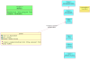
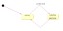
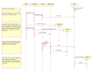
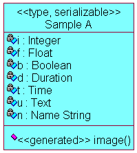
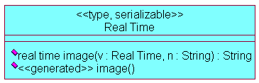
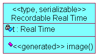

The intention of this feature is to help cope with the transfer of data, both via network connections and also to files.
Both Ada and Java include language support for serialization; Ada in the form of streams (ARM95 Chapter 13), Java using implements Serializable. So why provide extra support?
There are two main drivers:
To indicate that a «type» needs serialization support, annotate it [[serializable]] (as usual, you can stereotype as «type, serializable»).
ColdFrame generates code which outputs XML representations of the serialized information, but it needs to be able to convert the data values to text.
It can do this for
There are two styles of conversion function:
[[field-image]] would be best used for imported types with structure (for example, an array).
For compatibility with ColdFrame releases up to and including 20030906, the annotation [[image]] is a shorthand for [[field-image]].
In the diagram,
the buff classes are what are included in the UML model, the grey classes are what gets generated, and the yellow classes are supporting code.
The basic type is T, in the domain Domain, which is a record type and is marked «serializable».
The generated Ada package Domain contains the type T, which is the same as it would be without the «serializable» marking.
A child package Domain.Serializable is generated as well. For each «serializable» type, a type and a subprogram are generated:
with ColdFrame.Project.Serialization;
package Domain.Serializable is
type T is new ColdFrame.Project.Serialization.Base with record
Payload : Domain.T;
end record;
function Image (S : T) return String;
end Domain.Serializable;
Image produces an XML rendition of the recorded value.
ColdFrame.Project.Serialization is expected to be (a renaming of) a package containing a tagged type Base, which the Project output package understands (it might want to add timestamp information, for example).
The provided ColdFrame.Project.Serialization is a renaming of ColdFrame.Serialization, which provides the minimum needed (the type Base).
ColdFrame provides very simple support for serialization in the package ColdFrame.Serialization. To provide your own, you need to provide your own version of ColdFrame.Project.Serialization; all it has to do is provide a tagged type Base with two primitive operations:
See ColdFrame.Serialization for information on how these should be implemented.
For most types, ColdFrame can work out how to convert to a textual representation for itself. This includes
However, this may not be possible for types imported from other domains (it's OK for types which are visibly scalar, such as GNAT.Sockets.Port_Type). In this case, you can specify an image function for the type.
In the diagram, Foreign is a renaming of type Other.Domain.Exported. You tell ColdFrame what image function to use via the annotation [[image]], in this case [[image : Other_Domain.Image_Of_Exported]]. ColdFrame then expects to be able to call
function [Other_Domain.]Image_Of_Exported
(Value : Exported;
Name : String) return String;
where Name is the field name and Value is the value to be converted to text.
The output expected is discussed below.
A demonstration of serialization is provided in the Serialization model in the examples subdirectory of the distribution.
| The class model: |  |
| The state model for the Server: |  |
| A sequence diagram: |  |
The serializable data for the demonstration (domain Serialization Demo) consists of three types.

Sample A shows standard types, which can be translated "as is". The code generated in the domain package spec is
type Sample_A is record
I : Integer;
F : Float;
B : Boolean;
D : Duration;
T : ColdFrame.Project.Calendar.Time;
U : Unbounded_String;
N : Name_String;
end record;
(Name String is a bounded string, [[string:max 32]]).
The code generated in the Serializable child package spec is
type Sample_A
is new ColdFrame.Project.Serialization.Base with record
Payload : Serialization_Demo.Sample_A;
end record;
function Image (S : Sample_A) return String;
A typical result of calling Image is
<record name="Serialization_Demo.Sample_A"> <field name="I"> 42</field> <field name="F"> 1.23450E-01</field> <field name="B">FALSE</field> <field name="D"> 1.234500000</field> <field name="T"> 1046534734.051916000</field> <field name="U">unbounded</field> <field name="N">bounded</field> </record>
(the Time is represented using ColdFrame.Project.Calendar.Image; the provided version shows the number of seconds since the POSIX epoch, 1 January 1970 00:00).

Real Time is a renaming of Ada.Real_Time.Time. Because there is no 'Img function for Ada.Real_Time.Time, we have to provide our own; this is the function real time image(). We tell ColdFrame that this is the image function by [[image : Real_Time_Image]].
The code generated in the domain package spec is
subtype Real_Time
is Ada.Real_Time.Time;
use type Real_Time;
function Real_Time_Image
(V : Real_Time;
N : String)
return String;
The code generated in the Serializable child package spec is
type Real_Time
is new ColdFrame.Project.Serialization.Base with record
Payload : Serialization_Demo.Real_Time;
end record;
function Image (S : Real_Time) return String;
The handwritten proper body of Real_Time_Image is
separate (Serialization_Demo)
function Real_Time_Image
(V : Real_Time;
N : String)
return String is
use type Ada.Real_Time.Time;
use type Ada.Real_Time.Time_Span;
Img : constant String :=
Duration'Image (Ada.Real_Time.To_Duration (V - Ada.Real_Time.Time_First));
begin
if N'Length > 0 then
return "<field name=""" & N & """>" & Img & "</field>";
else
return "<field name=""Payload"">" & Img & "</field>";
end if;
end Real_Time_Image;
If the "field name" parameter N is empty, the image function has been called for recording of a plain type, as in this case, so we make up a field name. Otherwise, it's the name of the field of this type in a record (see the next section), so it's output verbatim.
A typical result of calling Serializable.Image is
<record name="Serialization_Demo.Real_Time"> <field name="Payload">-8176441673.395873810</field> </record>

Recordable Real Time is a record with a component of a type with an [[image]] function.
The code generated in the domain package spec is
type Recordable_Real_Time is record
T : Real_Time;
end record;
The code generated in the Serializable child package spec is
type Recordable_Real_Time
is new ColdFrame.Project.Serialization.Base with record
Payload : Serialization_Demo.Recordable_Real_Time;
end record;
function Image (S : Recordable_Real_Time) return String;
A typical result of calling Image is
<record name="Serialization_Demo.Recordable_Real_Time"> <field name="T">-8176441673.905397810</field> </record>
Note that this time the Real_Time_Image was called with the field name parameter set to "T".
Sample code for taking a Sample_A record (from the Client program in the Serialization demonstration) is
Serialization.Interface.Output
(Serialization_Demo.Serializable.Sample_A'
(Serialization.Serializable_Base with
Payload =>
(I => 42,
F => 0.12345,
B => False,
D => 1.2345,
T => ColdFrame.Project.Calendar.Clock,
U => Ada.Strings.Unbounded.To_Unbounded_String ("unbounded"),
N => Serialization_Demo.Name_String_Package.To_Bounded_String
("bounded"))));
This is rather more complex than, in general, it would need to be. For a start, it would be normal to take this record from within the domain concerned (Serialization_Demo), so we could leave out the qualification:
Serialization.Interface.Output
(Serializable.Sample_A'
(Serialization.Serializable_Base with
Payload =>
(I => 42,
F => 0.12345,
B => False,
D => 1.2345,
T => ColdFrame.Project.Calendar.Clock,
U => Ada.Strings.Unbounded.To_Unbounded_String ("unbounded"),
N => Name_String_Package.To_Bounded_String ("bounded"))));
Additionally, the demonstration is a tad confusing because of the similarity of the names. If instead of Serialization the facility had been called Recording, it would look like
Recording.Interface.Output
(Serializable.Sample_A'
(Recording.Serializable_Base with
Payload =>
(I => 42,
F => 0.12345,
B => False,
D => 1.2345,
T => ColdFrame.Project.Calendar.Clock,
U => Ada.Strings.Unbounded.To_Unbounded_String ("unbounded"),
N => Name_String_Package.To_Bounded_String
("bounded"))));
As a final thought, if we already had a Sample A value (in say Value), it would be more like
Recording.Interface.Output
(Serializable.Sample_A'
(Recording.Serializable_Base with Payload => Value));
Sample code for outputting received data (from the Server program in the Serialization demonstration) is
declare
Rec : constant ColdFrame.Project.Serialization.Base'Class :=
ColdFrame.Project.Serialization.Base'Class'Input (Channel);
begin
Ada.Text_IO.Put_Line (Ada.Text_IO.Standard_Output,
ColdFrame.Project.Serialization.Image (Rec));
Ada.Text_IO.Flush;
end;
(this uses Ada.Text_IO rather than GNAT.IO because of the need to flush the data, in case the output is redirected).
Note that this doesn't use the Serialization (or Recording) package; instead, it uses the (renamed) real base class, which in this case is ColdFrame's default. This ensures you don't run the risk of pulling in lots more of the application code than you need.
However, what you do have to do is to with all the Domain.Serializable packages (if not, you'll get an exception in 'Class'Input).
{kind=link}
{kind=link}
{kind=link}
{kind=link}